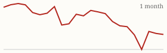
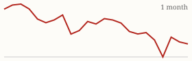

| Today's briefing for operators |
Top line: The best deals come from listening, and AI is reshaping security and headcount |
|
| Friday, November 27, 2026 | Late Edition | Curated from 30 voices on X |
|
Real Estate
The Best Deal Pace Morby Ever Did Had No Script
A Thanksgiving appointment with a widowed seller turned into a zero-down, zero-interest deal a year later, because he listened instead of pitching.
By @PaceJordanMorby |
Pace Morby with the seller, Mrs. Morten. Image via @PaceJordanMorby on X | Five years ago a seller with two houses asked Pace Morby to meet on Thanksgiving. Her husband had died three years earlier, and she didn't want to be alone that day. He went, listened, left without a contract, and the two went six months without discussing real estate. |
A year later he bought both houses with zero down and zero interest. She didn't need a lump of cash; she needed the income her husband's paycheck used to provide, and two monthly payments now cover her cost of living. The lesson for any acquisitions team: find out what the seller actually needs, and the deal structure follows. "Everybody wants the script. There was no script." |
|
| Read on X |
|
Mortgage Rates & Markets | Mortgage Rates Today's average lender rates | 30-year fixed | 7.26% | -0.06 | | 15-year fixed | 6.82% | -0.05 |
Daily change vs. prior day. Source: Mortgage News Daily, as of 11/25/2026 (updated weekdays about 4 PM ET). |
|
S&P 500 Close of Wed, Nov 25 (markets closed since; last close shown) S&P 500 7,182.78 ▼ -18.31 (-0.25%)  Yahoo Finance chart data (daily closes) |
|
Nasdaq Composite Close of Wed, Nov 25 (markets closed since; last close shown) Nasdaq Composite 23,585.80 ▼ -147.74 (-0.62%)  Yahoo Finance chart data (daily closes) |
|
| Real Estate & Deals | Boring Buildings, Steady Money By @loganjrankin Logan Rankin says he's made a good living on boring apartments in boring Midwest towns. He doesn't need population booms, big rent growth or cap rate compression, just tenants who work and pay. Underwrite for the steady case, not the hype. Read on X |
Playing It Too Safe Costs More By @ChrisRamsey60 Chris Ramsey says his biggest mistakes came from not taking enough risk, and that most people's low risk tolerance is what holds them back from buying during downturns. Worth weighing against a cooling market: careful isn't the same as frozen. Read on X |
| AI Briefing | Video still from Mistral's Large 4 demo. Image via @MistralAI on X Mistral Large 4 Pinpoints Images By @MistralAI Mistral says Large 4 can find an exact match in an image and outline it on a map, beating even closed frontier models on visual grounding tasks. Another sign open models are closing the gap on the big labs. Read on X |
Image from the post on SAP job cuts. Image via @rohanpaul_ai on X SAP Weighs 10,000 AI-Driven Job Cuts By @rohanpaul_ai The FT reports SAP is weighing at least 10,000 job cuts, about 1 in 10 roles, in an AI restructuring even as revenue grew 13% last quarter. Growing companies are now cutting roles because of AI, not slowdowns, so it's worth asking which of your roles AI changes next. Read on X |
AI Makes Hacking Much Easier By @rohanpaul_ai Palo Alto Networks CEO Nikesh Arora says AI is finding 50 years of coding mistakes fast, and attackers are cashing in; one hacker reportedly hit 19 companies at once. Separately, SAP confirmed a cyberattack using stolen login tokens. Lock down logins and shared accounts across your team. Read on X |
NVIDIA's $115.8B Quarter By @PeterDiamandis Peter Diamandis notes NVIDIA's quarterly revenue hit $115.8 billion, up 103% year over year, about 93% from data centers. The AI build-out is still accelerating. Read on X |
Claude as a Free Video Editor By @Sabrina_Ramonov Sabrina Ramonov shows Claude Code handling all of her video editing, work that used to eat her whole weekend. Useful if your team produces marketing videos. Read on X |
| Business & Leadership | Aim So High Your Misses Win By @danmartell Dan Martell: aim so high that your misses beat most people's wins. Big targets raise the floor, even when you fall short. Read on X |
Let It Go Faster By @danmartell Martell: someone cuts you off at 8am and you're still mad at dinner, while they forgot you in four seconds. Leaders who drop small frustrations quickly keep their energy for what matters. Read on X |
|
The Hyre Times is compiled each morning by Groky from public posts on X plus public rate and market data. Summaries reflect the authors' own claims and have not been independently verified. Not financial advice. © 2026 Hyre Times. |
|